1920 × 90 px · один SVG-файл · без JS и внешних шрифтов · цикл 6 с
«АКЦИЯ» слева, «37 %» справа — логотип остаётся оптическим центром, а волна идёт по нарастающей: подсвечивает «АКЦИЯ» → проходит бликом по буквам → поджигает «37 %». Кульминация приходится на цену.

«АКЦИЯ 37 %» единым блоком справа от логотипа. Читается как цельное предложение, но логотип уходит из центра холста, а вспышка «АКЦИЯ» и «37 %» происходит почти одновременно — нарастания меньше.

Та же анимация в светлой палитре — логотип остаётся тёмным, как в оригинале.

<img src="zammer-banner.svg"
alt="ZAMMER — акция 37%"
width="1920" height="90"
style="display:block;width:100%;height:auto">
SVG анимируется прямо внутри <img> — скрипты не нужны.
Файл масштабируется без потерь под любую ширину контейнера.